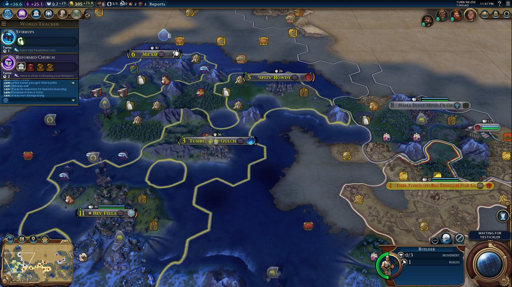
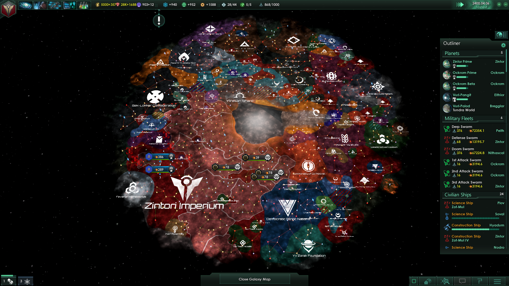

The 2LC specialize in games that take at least eight hours to get into. Most of the games we play span several sessions, and it's usually good to dedicate four hours whenever the crew gets together. However, on occasion we get down with games that are short and quick!
This dynamic turn-based strategy game involves either a free-for-all where each player builds up their strength before skirmishing with the others. Different win conditions exist that allow a snake in the grass to come out on top.
The clock always moves in this epic strategy game. Each player creates a spacefaring race of aliens before exploring the galaxy. It is important to research new technologies while slowly expanding their empire by colonizing nearby systems. This game takes so long and is so difficult that the Crew almost always forms a friendly alliance against the AI.
Players assume the roles of one of three available races and build their armies to pit against one another. A short and quick real-time match that typically involves everyone teaming up against John since he's the best at this game.
A new game introduced to the Crew by Tyler, each player assumes archetypal roles of fantasy characters: fighter, paladin, thief, wizard, ranger, warlock, and sorceror. A quick favorite of the crew, thanks to its community maps.